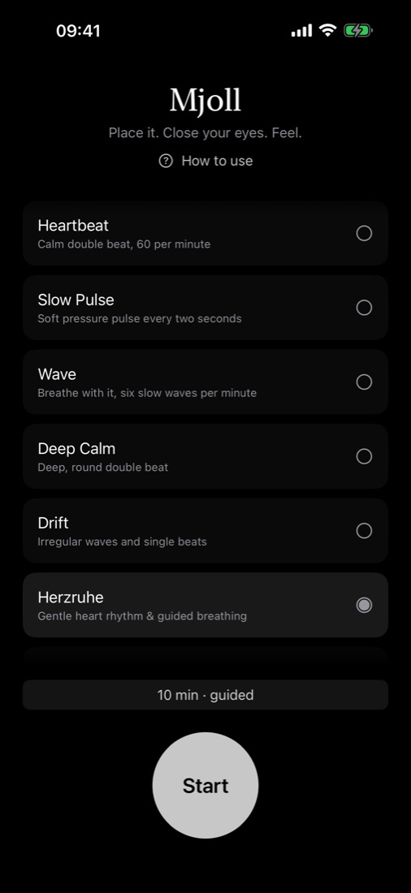
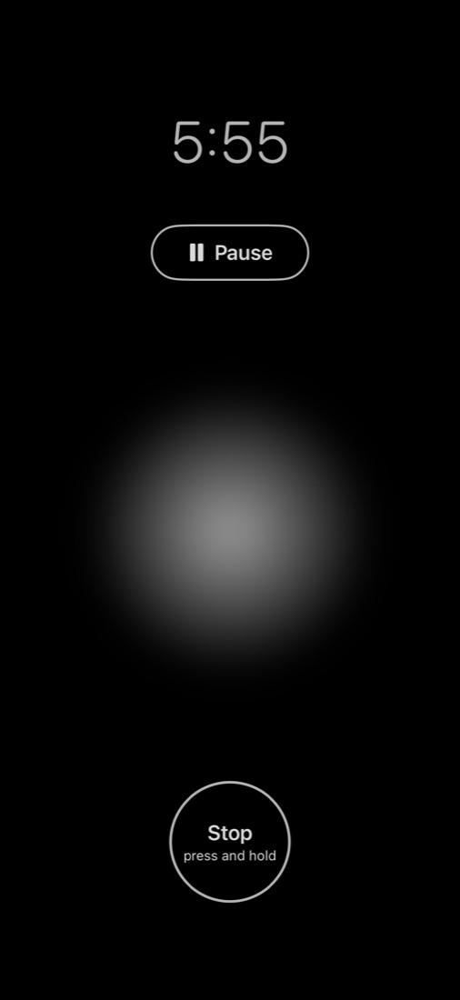
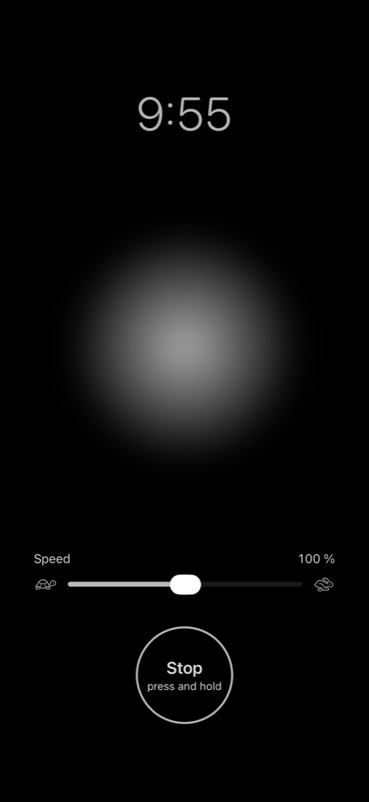
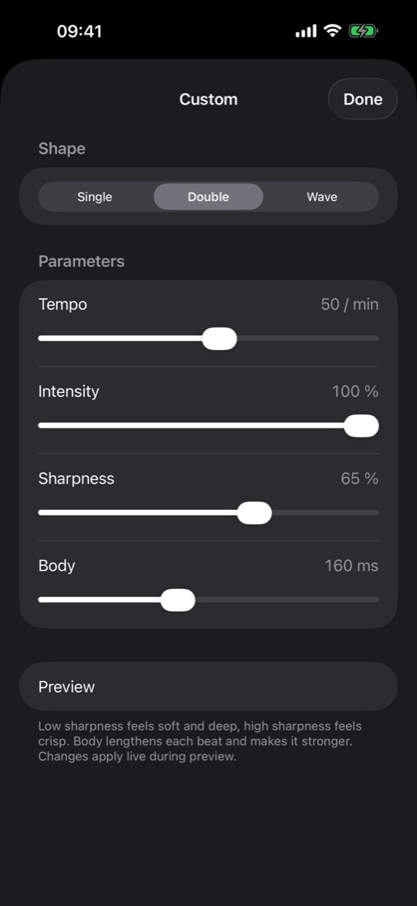

Mjoll Hugleiðsla með snertingu fyrir iPhone
Leggðu hann. Lokaðu augunum. Finndu.
Mjoll er rólegt iPhone-app fyrir hugleiðslu með snertingu. Mjúk titringsmynstur leiða athyglina – ekkert hljóð, ekkert að horfa á. Veldu prógramm, stilltu tímann, lokaðu augunum og finndu.

Appið er á ensku. Nafnið Mjoll kemur úr fornnorrænu: mjöll, nýfallinn og hljóðlátur snjór.
Lestu öryggisleiðbeiningarnar fyrir fyrstu lotuna. Notaðu ekki Mjoll ef þú ert með gangráð eða annað ígrætt lækningatæki.




Hvar á að leggja hann
Þú finnur best fyrir honum þar sem iPhone snertir bein.
- Efst á bringunni – leggðu iPhone ofarlega á bringubeinið, rétt fyrir neðan hálsinn. Sitjandi eða liggjandi, skjárinn upp eða niður.
- Hönd – haltu léttilega á honum í opnum lófa.
Notkun
- Hugleiðsla – láttu púlsinn vera akkerið þitt. Þegar hugurinn reikar, snúðu aftur að titringnum.
- Öndun – veldu Wave. Andaðu inn þegar bylgjan rís, andaðu út þegar hún hjaðnar.
- Leidd – Herzruhe (þýska fyrir „hjarta í hvíld“) tekur tíu mínútur: mjúkur hjartsláttur til að lenda, hæg leidd öndun og síðan hljóðlát lok.
- Slaka á – fyrir svefninn velurðu rólegt prógramm og stuttan tíma. Lotan endar af sjálfu sér.
Stilltu hraða hvers prógramms eftir þínum takti – Mjoll man hann.
Hugleiðsla án hljóðs
Mjoll notar aðeins snertingu. Engin heyrnartól, engin rödd, engin tónlist. Það virkar með lokuð augu, í sameiginlegu rými, á ferðinni – og líka ef þú ert heyrnarlaus eða heyrnarskert(ur).
Spurningar fyrir kaup
Tekur Mjoll eftir því þegar hugurinn reikar?
Nei. Mjoll mælir ekkert um þig og metur ekkert. Púlsinn er akkeri: þegar þú tekur eftir að hugsanirnar reika, snýrðu aftur að honum.
Get ég læst iPhone á meðan lota stendur yfir?
Nei. iOS spilar snertiendurgjöf aðeins á meðan appið er opið. Skjárinn er því áfram kveiktur, dimmaður nánast í svart. Ef þú læsir iPhone eða skiptir um app gerir lotan hlé.
Er áskrift?
Nei. Mjoll er keypt einu sinni. Engin áskrift, engin kaup í appinu, enginn aðgangur.
Virkar Mjoll án nettengingar?
Já. Appið tengist engum netþjóni. Aðeins kaup og niðurhal fara í gegnum App Store.
Á hvaða tækjum virkar Mjoll?
Á iPhone með iOS 17 eða nýrra. Mjoll er ekki til fyrir iPad, Mac eða Apple Watch.
Örugg notkun
Notaðu ekki Mjoll ef þú ert með gangráð, ígræddan bjargráð eða annað ígrætt lækningatæki sem rafeindatæki eða seglar geta haft áhrif á. Mjoll biður þig að leggja iPhone á bringuna, nálægt þeim stað þar sem slík tæki eru yfirleitt. Ráðlegging okkar er skýr: notaðu Mjoll alls ekki í því tilfelli.
- Notaðu Mjoll aldrei við akstur, á hjóli eða við vinnu með vélar. Mjoll býður þér að loka augunum og beina athyglinni inn á við.
- Sofnaðu ekki með iPhone á líkamanum á meðan hann er í hleðslu. Langvarandi snerting húðar við heitt tæki getur valdið óþægindum eða bruna.
- Hættu ef þér líður illa eða færð svima. Ef þú ert með hjartasjúkdóm eða annan alvarlegan sjúkdóm eða ert barnshafandi skaltu ræða við lækni áður en þú notar Mjoll.
- Mjoll er app fyrir vellíðan, ekki lækningatæki. Það kemur ekki í stað læknismeðferðar eða sálfræðimeðferðar. Í neyð skaltu hafa samband við lækni eða hringja í 112.
Óskir fyrir næstu uppfærslu?
Mjoll er gert af einum forritara. Ef þú átt hugmynd, ósk eða eitthvað sem gæti virkað betur, þætti mér vænt um að heyra frá þér: mjollapp@icloud.com
Mjoll er app fyrir vellíðan og slökun. Það er ekki lækningatæki og greinir hvorki, meðhöndlar né fyrirbyggir neina sjúkdóma.